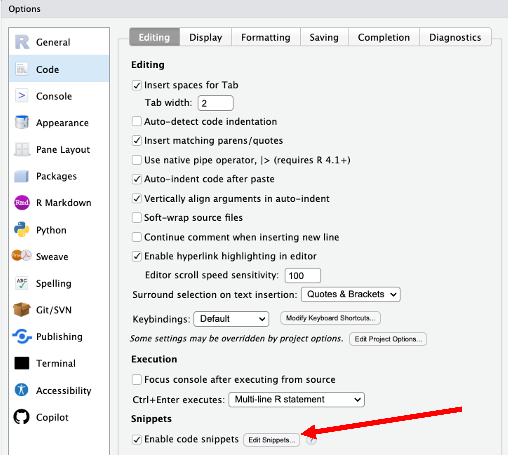

R.version.string[1] "R version 4.5.2 (2025-10-31)"The above is called a yaml (or yml) header. It provides the script with instructions it will execute when we save our document at the end of the session.
Introduction
The official home of the R language is The R Project for Statistical Computing:
From this site you can access:
This site is the “home base” for R itself and is separate from RStudio/Posit (which provides the Integrated Development Environment (IDE)).

Install R first, then RStudio.
###R version
R.version.string[1] "R version 4.5.2 (2025-10-31)"# If running inside RStudio, this will show RStudio version:
if (exists("RStudio.Version"))
paste("RStudio version:", RStudio.Version()$version)Explanation:
RStudio.Version is a function provided by RStudio. If it is run inside RStudio, it returns a list of metadata, including “version”. We are calling only for the version using the $ operator.
paste simply fronts the version with “RStudio version” so that it prints nicely.
Example: Base R functionality (works the same in RStudio since RStudio calls R under the hood)
CRAN (The Comprehensive R Archive Network) hosts R itself and thousands of R packages.
Because CRAN is mirrored (copied) around the world, you typically choose a CRAN mirror close to you geographically so downloads are faster and more reliable.
You can set your CRAN mirror interactively:
# This opens a menu in R to choose a CRAN mirror:
# chooseCRANmirror() # uncomment and run once in a session
# I am in Seattle as I record this, so I chose #68, as OHSU is the CRAN mirror that is geographically closest to me. Or you can set it programmatically in your script:
# Example: set CRAN mirror via options() for this session (you only need to run one of these, and only run it once)
# options(repos = c(CRAN = "https://ftp.osuosl.org/pub/cran/"))
# options(repos = c(CRAN = "https://cloud.r-project.org"))
# or this CRAN mirror (uncomment, if needed to run)
# options(repos = c(CRAN = "https://cran.r-project.org"))getOption("repos") CRAN
"@CRAN@" R needs to know where your files live. This is your working directory.
A very efficient workflow is to:
.Rproj and Setting the Working DirectoryCreate a .Rproj file, name it, and save it in your new work folder:
To create and save your R Script file:
.R extension).RmdOnce you are in your R Project, the working directory will automatically be the project folder.
Check your working directory:
getwd()[1] "/Users/bdevine/Library/CloudStorage/OneDrive-UW/Data_Sci_Cert_CAB/R_Session/R_Recording_17_dec_2025/HEOR_DS"You can change the working directory manually (less recommended than using Projects):
# Example only; adjust to your own path:
# setwd("/path/to/your/project/folder")Using R Projects is more robust than calling setwd() in every script, and it keeps your projects self-contained.
Once you have installed R and RStudio, open RStudio. By default, you will see four main panes:
.R scripts, .Rmd, .qmd filesAcross the top toolbar you will find buttons for:
.Rmd) or Rendering (for .qmd)This Quarto figure syntax that embeds an image and centers it using a figure attribute block. 
Create a code chunk by typing 3 backticks and then {r}. End the code chunk by typing 3 more backticks. Naming each chunk helps to debug when knitting/rendering (see below).
# I type my code here (without the hash). It is easiest to debug if you separate it into chunks like this. # To run the code you have 3 options:
# (1) highlight the line and press Run (in the upper right),
# (2) place your cursor at the end of the line and type Cmd/Ctrl + Enter, or
# (3) to run the entire chunk, click on the green button to the right. # Create a few objects (watch the Environment pane update)
nums <- rnorm(10)
df <- data.frame(id = 1:5, value = c(10, 20, 15, 30, NA))
# Use Help pane: open documentation
help("mean") # or ?mean This is code that will insert an image when we render the document.
# Show a basic plot (appears in Plots tab or below)
plot(nums, type = "b", main = "Demo plot", xlab = "Index", ylab = "Value")
# b is commanding R to create both points and lines. R’s functionality is extended through packages (libraries). You typically:
# Example install - (run once; set eval: false to avoid automatic install).
# or install pacakges from within the Console.
install.packages("dplyr")
install.packages("ggplot2")# Example install of multiple packages (run once; set eval: false to avoid automatic install).
# or install packages from within the Console.
install.packages(c("readr", "readxl", "data.table"))# Load dplyr package
library(dplyr)# Load if available; fall back gracefully if not
loaded_pkgs <- c()
for (pkg in c("dplyr", "ggplot2")) {
if (requireNamespace(pkg, quietly = TRUE)) {
library(pkg, character.only = TRUE)
loaded_pkgs <- c(loaded_pkgs, pkg)
}
}
# This code creates an empty vector to track successfully loaded packages.
# loops through the list of package names.
# checks whether each package is installed.
# loads the package if it is installed.
# tells library that the variable contains the package name as text.
# records the packages that were loaded. (if it is not installed, it isn't loaded)
loaded_pkgs[1] "dplyr" "ggplot2"Notes:
install.packages("packagename") once per machine or project.library(packagename) in each session/script where needed.Good practices for CSV/TSV flat files:
NA; avoid “-”, “N/A”, “null”)YYYY-MM-DD) and include time zones if timestamps are present# Example tidy dataset
tidy_example <- data.frame(
subject_id = 1:6,
group = c("control", "control", "control", "treatment", "treatment", "treatment"),
age_years = c(34, 45, 51, 29, 40, NA),
visit_date = as.Date(c("2025-01-10", "2025-01-12", "2025-01-13", "2025-01-11", "2025-01-12", "2025-01-14")),
score = c(87, 90, 85, 92, 88, 91)
)
# Create a data folder, then save CSV
dir.create("data", showWarnings = FALSE)
csv_path <- file.path("data", "tidy_example.csv")
write.csv(tidy_example, csv_path, row.names = FALSE, na = "")
csv_path[1] "data/tidy_example.csv"# dir.create, file.path and wrte.csv are all R functions native to R.
# dir.create("data") creates a data folder in the current working directory.
# file.path builds a file path that works on any operating system.
# "data" is the folder I am creating.
# "tidy_example" is the name of my dataset.
# csv_path is the object I have created that specifies the path where data/tidy_exmple.csv will be kept.
# write.csv saves the csv in the data folder in the working directory.
# row.names = FALSE tells R to not include the row numbers in the csv.
# na = "" tells R to save empty cells as empty cells instead of as "NA".
# check it out in your data folder! # we reload the tidy_example here by creating an object (loaded_base) and reading in from the csv_path.
loaded_base <- read.csv(csv_path, stringsAsFactors = FALSE)
# we could also have loaded it by specifying the relative path like this:
# loaded_base <- read.csv("data/tidy_example.csv")
# R's default is to set strings as factors. Sometimes the type of variable is important when manipulating variables.
str(loaded_base) # structure of the dataframe'data.frame': 6 obs. of 5 variables:
$ subject_id: int 1 2 3 4 5 6
$ group : chr "control" "control" "control" "treatment" ...
$ age_years : int 34 45 51 29 40 NA
$ visit_date: chr "2025-01-10" "2025-01-12" "2025-01-13" "2025-01-11" ...
$ score : int 87 90 85 92 88 91head(loaded_base) # first six rows (by default)# here is another way to handle this. Let's say instead of loading "tidy_example" in its original form I load it by creating a tidy_example object.
# then I want to add a new variable to tidy_example and resave it.
# (because we know that simply creating an object will not add the new variable to the dataframe, nor will it save it)
# Load tidy_example data back in
tidy_example <- read.csv(csv_path)
# Add a new dichotomized variable
tidy_example$score_dichot <- ifelse(tidy_example$score > 90, 1, 0)
# Save it again (overwrite the same file)
write.csv(tidy_example, csv_path, row.names = FALSE, na = "")
head(tidy_example)# Install readr if needed (run once; chunk is set to eval=FALSE so it won't execute automatically)
install.packages("readr")# If readr is available, demonstrate its use safely
if (requireNamespace("readr", quietly = TRUE)) {
loaded_readr <- readr::read_csv(csv_path, show_col_types = FALSE)
head(loaded_readr)
}# requireNamespace checks to see if the "readr" package is installed. This is particularly useful if you are working with others and you do not want your code to automatically add a package (readr) to their machine.
# the double-colons calls the package only when needed but does not install it. if (requireNamespace("readr", quietly = TRUE)) {
loaded_typed <- readr::read_csv(
csv_path,
col_types = readr::cols(
subject_id = readr::col_integer(),
group = readr::col_factor(levels = c("control", "treatment")),
age_years = readr::col_double(),
visit_date = readr::col_date(),
score = readr::col_double()
),
show_col_types = FALSE
)
str(loaded_typed)
}spc_tbl_ [6 × 6] (S3: spec_tbl_df/tbl_df/tbl/data.frame)
$ subject_id : int [1:6] 1 2 3 4 5 6
$ group : Factor w/ 2 levels "control","treatment": 1 1 1 2 2 2
$ age_years : num [1:6] 34 45 51 29 40 NA
$ visit_date : Date[1:6], format: "2025-01-10" "2025-01-12" ...
$ score : num [1:6] 87 90 85 92 88 91
$ score_dichot: num [1:6] 0 0 0 1 0 1
- attr(*, "spec")=
.. cols(
.. subject_id = col_integer(),
.. group = col_factor(levels = c("control", "treatment"), ordered = FALSE, include_na = FALSE),
.. age_years = col_double(),
.. visit_date = col_date(format = ""),
.. score = col_double(),
.. score_dichot = col_double()
.. )
- attr(*, "problems")=<externalptr> # If the readr package is installed, this code will read the dsv file at csv_path, explicitly define the data type of each column, store it as loaded_typed, and print its structure.
# If the readr package is installed but not loaded as a library, the 2 colons in each row will use the readr package anyway, use to execute that row. # set eval=FALSE to prevent automatic installation.
# or install packages from within the Console.
install.packages("readxl") # run once
if (requireNamespace("readxl", quietly = TRUE)) {
# Example: readxl::read_excel("data/example.xlsx", sheet = 1)
}
# (We won’t read here unless a file exists)
# note that I can load just one tab of my excel workbook (sheet 1)
# if I comment out the Example line, there is nothing inside the brackets, so R will return a NULL.# Base R calculations
x <- c(1, 2, 3, 4, 5)
# x is the object I have created. Note the object now appears in the Environment pane.
# <- is called the assignment operator.
# c starts a vector of numbers.
mean(x)[1] 3sd(x)[1] 1.581139sum(x^2)[1] 55# I call for the mean, sd, and sum of the squared numbers in my vector. R works with several fundamental object types:
x <- 5)scalar_example <- 42
scalar_example[1] 42a <- c(10, 20, 30)
b <- c("alpha", "beta", "gamma")
a[1] 10 20 30b[1] "alpha" "beta" "gamma"treatment <- c("control", "treatment", "control", "treatment", "treatment", "control")
treatment[1] "control" "treatment" "control" "treatment" "treatment" "control" grp <- factor(treatment, levels = c("control", "treatment"))
grp[1] control treatment control treatment treatment control
Levels: control treatment# Matrices - have 2 dimensions; rows and columns
m <- matrix(1:9, nrow = 3)
m [,1] [,2] [,3]
[1,] 1 4 7
[2,] 2 5 8
[3,] 3 6 9# Arrays (3-dimensional example)
arr <- array(1:24, dim = c(3, 4, 2))
arr, , 1
[,1] [,2] [,3] [,4]
[1,] 1 4 7 10
[2,] 2 5 8 11
[3,] 3 6 9 12
, , 2
[,1] [,2] [,3] [,4]
[1,] 13 16 19 22
[2,] 14 17 20 23
[3,] 15 18 21 24# Data frames (tabular)
df2 <- data.frame(id = 1:6, group = grp, score = c(88, 92, 85, 91, 87, 90))
df2# Lists
lst <- list(scalar = scalar_example, vector = a, matrix = m, array = arr, dataframe = df2)
lst$scalar
[1] 42
$vector
[1] 10 20 30
$matrix
[,1] [,2] [,3]
[1,] 1 4 7
[2,] 2 5 8
[3,] 3 6 9
$array
, , 1
[,1] [,2] [,3] [,4]
[1,] 1 4 7 10
[2,] 2 5 8 11
[3,] 3 6 9 12
, , 2
[,1] [,2] [,3] [,4]
[1,] 13 16 19 22
[2,] 14 17 20 23
[3,] 15 18 21 24
$dataframe
id group score
1 1 control 88
2 2 treatment 92
3 3 control 85
4 4 treatment 91
5 5 treatment 87
6 6 control 90If you have used Stata or SAS, you may be used to “datasets” as files on disk.
In R:
Conceptually, think of “dataset on disk” (Stata/SAS) versus “data frame in memory” (R), even though they represent similar rectangular data.
You can write exactly the same R code in both environments; RStudio simply makes development more convenient.
R is an open-source language, which means:
You can define your own functions easily:
# A simple custom function
add_two <- function(x) {
x + 2
}
add_two(5)[1] 7# add_two is the name of the function (or the object);
# <- is the assignment operator
# function tells R you are defining a function;
# x is the input argument; # when you call add_two(5) you are saying that x takes the value of 5.
# The code inside {} is the body of the function. This is what runs when the function is called.
# x + 2 is what R will return.
# Another example: compute a z-score
z_score <- function(x) {
(x - mean(x, na.rm = TRUE)) / sd(x, na.rm = TRUE)
}
z_score(c(1, 2, 3, 4, 5))[1] -1.2649111 -0.6324555 0.0000000 0.6324555 1.2649111# x is the argument.
# mean and sd are the functions.
# 1,2,3,4,5 is the vector that comprises the dataset for the argument.
# na.rm is the option that removes missing values. This is the same mechanism that package authors use—just organized and distributed as packages.
Snippets are short templates of code you can insert quickly in RStudio.
Example snippet definition:
snippet fun
${1:fname} <- function(${2:x}) {
${0}
}colors <- function(x) {result = x + 2
return(result)
}
colors(5)[1] 7To see how it works, in your R script type fun and press Tab to expand this into a function template.
To explore snippets in RStudio:

snippet gg_hist
${1:plot_name} <- ggplot(data = ${2:data_name}, mapping = aes(x = ${3:x_var_name})) +
geom_histogram( fill = "lightblue", color = "lightblue") +
labs(title = "${4:title_name}", x = "${5:x_axis_name}",y = "${6:y_axis_name}")+
theme_minimal()gg_hist and press Tab to insert the template.x <- rnorm(100, mean = 50, sd = 10)
summary(x) Min. 1st Qu. Median Mean 3rd Qu. Max.
30.42 42.66 48.72 49.45 55.01 73.04 mean(x); median(x); sd(x); quantile(x, probs = c(0.25, 0.5, 0.75))[1] 49.45473[1] 48.71587[1] 9.42136 25% 50% 75%
42.65972 48.71587 55.00503 if (requireNamespace("dplyr", quietly = TRUE)) {
library(dplyr)
loaded_base %>%
group_by(group) %>%
summarise(
n = n(),
mean_score = mean(score, na.rm = TRUE),
mean_age = mean(age_years, na.rm = TRUE)
)
}if (requireNamespace("ggplot2", quietly = TRUE)) {
library(ggplot2)
ggplot(loaded_base, aes(x = group, y = score, fill = group)) +
geom_boxplot() +
geom_jitter(width = 0.1, alpha = 0.6) +
labs(title = "Scores by Group", x = "Group", y = "Score") +
theme_minimal()
}
# this code says that if ggplot2 is available, please load it. If it is not available, creating the graph is optional and the code will run without it (and without creating the plot)
# ggplot requires that I must have previously created a dataframe that is in long format that it will use. In this case, loaded_base is already in the format that ggplot can use.
# ggplot has specific syntax that is easy to learn.
# here are 2 ggplot resources:
# https://www.data-to-viz.com/
# https://r-graph-gallery.com/line-chart-ggplot2.htmlfit <- lm(mpg ~ wt + cyl, data = mtcars)
summary(fit)
Call:
lm(formula = mpg ~ wt + cyl, data = mtcars)
Residuals:
Min 1Q Median 3Q Max
-4.2893 -1.5512 -0.4684 1.5743 6.1004
Coefficients:
Estimate Std. Error t value Pr(>|t|)
(Intercept) 39.6863 1.7150 23.141 < 2e-16 ***
wt -3.1910 0.7569 -4.216 0.000222 ***
cyl -1.5078 0.4147 -3.636 0.001064 **
---
Signif. codes: 0 '***' 0.001 '**' 0.01 '*' 0.05 '.' 0.1 ' ' 1
Residual standard error: 2.568 on 29 degrees of freedom
Multiple R-squared: 0.8302, Adjusted R-squared: 0.8185
F-statistic: 70.91 on 2 and 29 DF, p-value: 6.809e-12# fit is the name of the regression model object
# <- is the assignment operator
# lm commands linear regression
# mpg is the outcome (y variable)
# ~ is the formula operator that expresses relationships.
# wt and cyl are the x variables
# the dataframe specified is mtcars (built int)
# lm(y ~ x + z, data = dataframe)
# Interpretation:
# for every one unit (1000 pounds) increase in car weight, mpg decreases by 3.19 mpg, when adjusting for number of cylinders.
# for every one cylinder increase, mpg decreases by 1.5 mpg, when adjusting for car weight.
# weight and number of cylinders are correlated. # Compare mpg for automatic vs manual transmissions
t.test(mpg ~ am, data = mtcars)
Welch Two Sample t-test
data: mpg by am
t = -3.7671, df = 18.332, p-value = 0.001374
alternative hypothesis: true difference in means between group 0 and group 1 is not equal to 0
95 percent confidence interval:
-11.280194 -3.209684
sample estimates:
mean in group 0 mean in group 1
17.14737 24.39231 # am is transmission type and is coded as 0. manual transmission is coded as 1.
# Interpretation: the car with manual transmission gets approximately 7 more mpg than the car with automatic transmission gets. tbl <- table(mtcars$cyl, mtcars$gear)
tbl
3 4 5
4 1 8 2
6 2 4 1
8 12 0 2chisq.test(tbl)
Pearson's Chi-squared test
data: tbl
X-squared = 18.036, df = 4, p-value = 0.001214# Interpretation: a p-value of 0.0012 suggests there is a strong relationship between the number of cylinders and the number of gears in the mtcars dataset. out_csv <- file.path("data", "mtcars_export.csv")
dir.create("data", showWarnings = FALSE)
write.csv(mtcars, out_csv, row.names = FALSE)
out_csv[1] "data/mtcars_export.csv"out_rds <- file.path("data", "mtcars.rds")
saveRDS(mtcars, out_rds)
mtcars_loaded <- readRDS(out_rds)
identical(mtcars, mtcars_loaded)[1] TRUE# Saving an object as an .rds file writes it to disk; the object must be read back into the R session using readRDS() before it can be viewed or used.out_rdata <- file.path("data", "analysis_objects.RData")
obj1 <- 123
obj2 <- data.frame(x = 1:3, y = c("a", "b", "c"))
save(obj1, obj2, file = out_rdata)
rm(obj1, obj2) # removing obj1 and obj2
load(out_rdata) # reload the two objects
obj1; obj2 [1] 123# .RData saves multiple objects together. Quarto is a modern open-source scientific and technical publishing system built on Pandoc. It allows you to create dynamic documents, reports, presentations, and websites that combine text, code, and output.
{r}..qmd extension.# Quarto render (requires Quarto installed as a separate tool from https://quarto.org/)
if (requireNamespace("quarto", quietly = TRUE)) {
quarto::quarto_render("your_document.qmd")
}?mean
help("lm")
help.search("linear model")
vignette()